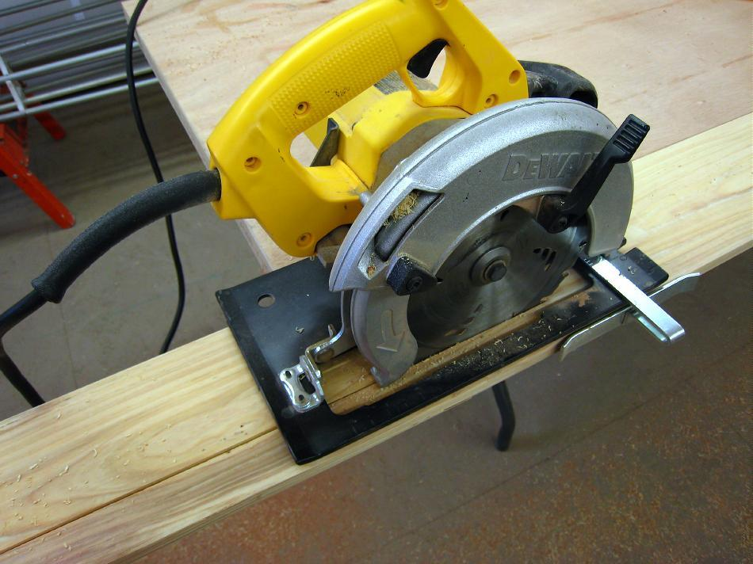

| Stringers | Menu Previous Page Next Page |
|

The rip fence has been set to 1 1/2" for cutting the gunwales. Walk along the board keeping some pressure against the saw to maintain the correct cutting line. Set the blade depth slightly below the thickness of the board for greater safety. Cut all gunwales using this fence setting before moving on to the 1" chine, keel, and deckridge in order to insure that all stringers are consistent in width. I normally use full length boards, and recommend their use, but these 10 footers were priced right and I wanted to provide instructions for butting / plating the boards to achieve the length required ( 14ft). Shorter boards are generally less expensive, and easier to find than full length, especially when using "clear" lumber. The redwood shown above was purchased at Lowe's and is clear S4S (Surfaced Four Sides) lumber.
|
|